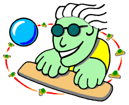
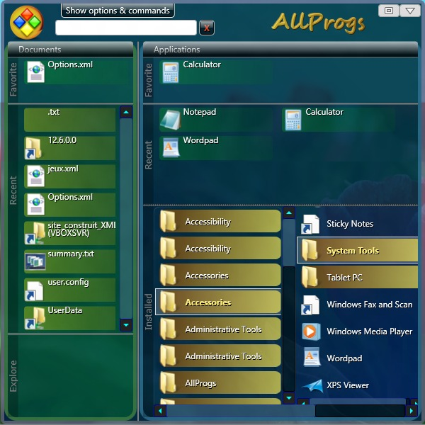

The author
My name is Christophe Bertrand.
I am an independent software designer and developer.
Always looking for motivating research-and-development projects.
Let me know if you need help for such a project.
- Artificial intelligence (usually for optimization, sometimes for problem solving).
- Programming language design.
- User interface theory.
Besides, I translate GUIs and software manuals from English to French.
You will find more information on chrisbertrand.net.
My profile on LinkedIn is here.
Now, let me present some of my other realizations.
Project Access to the World
"Accès au Monde" (Access to the World) is a project facilitating access to information technology to blind people.
This project is especially to my heart, even though I am not blind myself.
A specifically designed ergonomics.
A range of easy to use and accessible software.
The easy creation of blogs (Web sites).
The objective of the project is to facilitate the opening of the blind to the world.
Software for personal and professional life.
Communication tools to participate fully in social life.
Find all information on the website of the project (in french).
AllProgs
As a C# developer, I am particularly interested in the field of user interfaces (graphical or non-visual).
In the example of AllProgs, I created a variant of the classic Windows Start menu, but based on real scrolling areas and not on the concept of drop-down menus.
The GUI is implemented using WPF.
2018-04: I need to update this little app in order to make it fully compatible with Windows 10.
Many ideas are waiting for me to have free time to work on it. You can help by donating if you want to support my freeware.